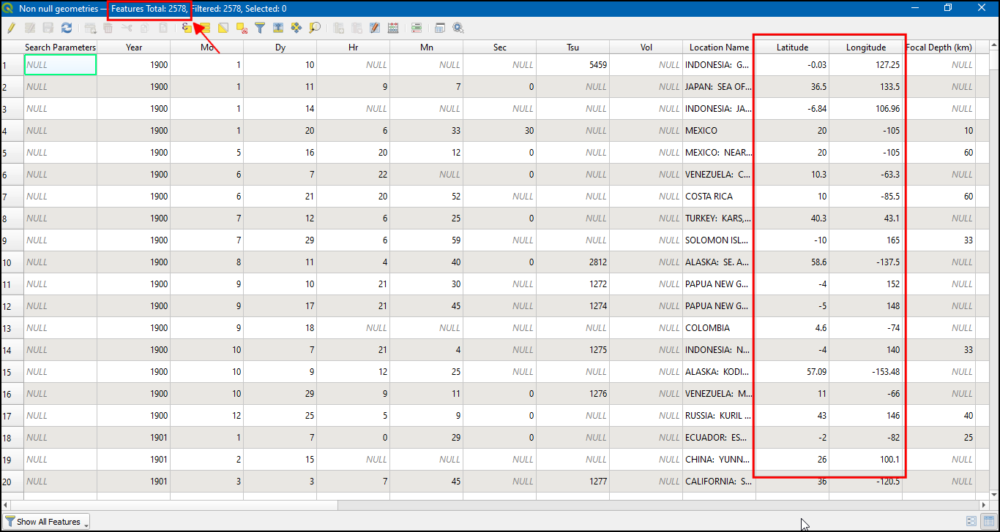

Campionare i dati di un raster usando punti o poligoni (QGIS3)¶
Molti dataset di tipo scientifico e relativi all’ambiente si presentano in forma di griglie raster. Per esempio i dati riguardanti l’altezza del suolo (DEM) sono distribuiti in formato raster. In questi file raster, il parametro che viene rappresentato è codificato nel valore di ciascuno dei pixel del raster. Spesso, abbiamo bisogno di estrarre questi valori relativamente a un dato territorio oppure di aggregarli su un’area definita. Queste funzioni sono disponibili con il modulo Sample raster values (campiona i valori raster) e il Zonal Statistics (statistiche zonali). PS esiste anche un plugin chiamato Point Sampling Tool che campiona i punti anche su livelli multipli.
Descrizione del compito¶
Data una griglia raster contenente le temperature massime negli Stati Uniti, vogliamo ricavarne le temperature di tutte le aree urbane e quindi calcolare la temperatura media per ciascuna divisione amministrativa degli USA.
Altri aspetti che avremo modo di apprendere nel corso dell’esercizio¶
Selezionare e rimuovere layer multipli dalla Tabella dei Contenuti di QGIS.
Ottenere i dati necessari.¶
Il servizio fornito da NOAA Climate Prediction Center fornisce dati GIS riguardanti il clima e le precipitazioni negli Stati Uniti. Scaricate la griglia più recente per le temperature massime. Al file verrà assegnato il nome di us.tmax_nohads_ll_{YYYYMMDD}_float.tif.
Useremo inoltre un file CSV da 2018 US Gazetteer che descrive le aree urbane negli USA. Scarichiamo il file Urban Areas Gazetteer File.
US Census Bureau provides TIGER/Line Shapefiles. Potete visitare il sito FTP site and download census tracts shapefile for California. Download Census Tracts for California file.
Per comodità, potete scaricare direttamente una copia del dataset dal seguente link:
us.tmax_nohads_ll_20190501_float.tif
Data Sources: [NOAACPC], [USGAZETTEER] [TIGER]
Procedimento¶
Estrai i file che trovi nel file complresso
2018_Gaz_ua_national.zipetl_2018_us_county.zipin una cartella nel tuo PC. Apri QGIS e usa il browser i QGIS per aprire il fileus.tmax_nohads_ll_20190501_float.tife aggiungerlo nella mappa.

Vedrete un nuovo livello
us.tmax_nohads_ll_20190501_floataggiunto al pannello Layers . Questo livello raster contiene le temperature massime registrate in ogni pixel in gradi Celsius. Dopo carichiamo i punti con le aree urbane. Questo file è in formato testo, con colonne separate da TAB (Tab Separated Values - TSV). Clicca il pulsante Open Data Source Manager nella barra degli strumenti Data Source Toolbar.

Nella finestra di dialogo Crea un vettore da un file di testo delimitato fate click su … e specificate il percorso del file di testo che avete scaricato. Nella sezione Formato file selezionate Delimitatori personalizzati e sbarrate la casella Tab. I due campi di coordinate X e Y. Nel nostro caso essi sono INTPTLONG e INTPTLAT. Click su OK.

Un nuovo livello di punti
2018_Gaz_ua_nationalsarà aggiunto nel pannello Layers. Ora siamo pronti ad estrarre valori delle celle di questo raster. Vai ora alla voce di menù .

Cercare e trovare nel pannello Strumenti di Processing (Processing Toolbox) la voce del menu: Analisi Raster -> Campiona valori Raster.

Selezionare
2018_Gaz_ua_nationalcome Input Point Layer. Selezionareus.tmax_nohads_ll_20190501_floatcome livello Raster Layer to sample. Espandere Advanced parameters ed inseriretmaxcome prefisso della colonna Output column prefix. Clicca Run. Quando l’elaborazione è terminata cliccare Close.

Un nuovo livello
Sampled Pointssarà caricato nel pannello Layers . Seleziona lo strumento Identify nella barra degli strumenti Attributes Toolbar e clicca su un punto. Vedrai gli attributi visualizzati nel pannello Identify Results. Vedrai un attributo tmax_1 aggiunto ad ogni elemento. Questo sarà il valore della cella/pixel del raster che corrisponde al punto selezionato. Il 1 rappresenta il numero di banda del raster. Se il raster ha più bande , ci saranno più colonne.

La prima parte della nostra analisi è fatta. Possiamo rimuovere i layer che non sono più necessari. Tenete premuto il tasto Shift della tastiera e selezionate con il mouse il layer
Sampled Pointsand2018_Gaz_ua_national. Click con il tasto destro e selezionate Rimuovi per eliminarli entrambi dalla TOC di QGIS.

Ora usiamo il livello con le aree per calcolare la temperatura media per ogni regione. Aprite dal browser QGIS il livello
tl_2018_us_county.shp.

Nota
Quasi tutti i moduli in QGIS vanno a creare un nuovo livello di output, ma il modulo Zonal Statistics (Statistiche zonali) aggiunge attributi senza creare un livello. Per questo è importante aprire il livello in QGIS che non sia dentro un archivio compresso. QGIS può aggiungere un file da un archivio zip direttamente, ma non può modificarlo e dunque l’algoritmo non funzionerebbe.
Un nuovo livello
tl_2018_us_countysarà caricato nel pannello Layers. Andate su .

Cercare e trovare nel pannello Strumenti di Processing (Processing Toolbox) la voce del menu: Analisi Raster -> Statistiche zonali.

Seleziona
us.tmax_nohads_ll_20190501_floatcome livello Raster layer etl_2018_us_countycome livello Vector layer containing zones. Inseriscitmax_come Output column prefix. Clicca the … vicino a Statistics to calculate.

Selezionare come statistiche
Mean(Media) e cliccare OK.

Click Run per lanciare il processo. Può richiedere diversi minuti di elaborazione. Click Close.

Come detto prima, il modulo Zonal Statistics non crea un nuovo livello. Fate tasto destro sul livello
tl_2018_us_countye selezionate Open Attribute Table.

Troverete una nuova colonna
tmax_meannella tabella. Contiene la temperatura media dei pixel dentro il poligono. Dove vedere valori NULL vuol dire che i poligoni non si sovrappongono con il raster delle temperature (e.g. Alaska, Hawaii and Puerto Rico)